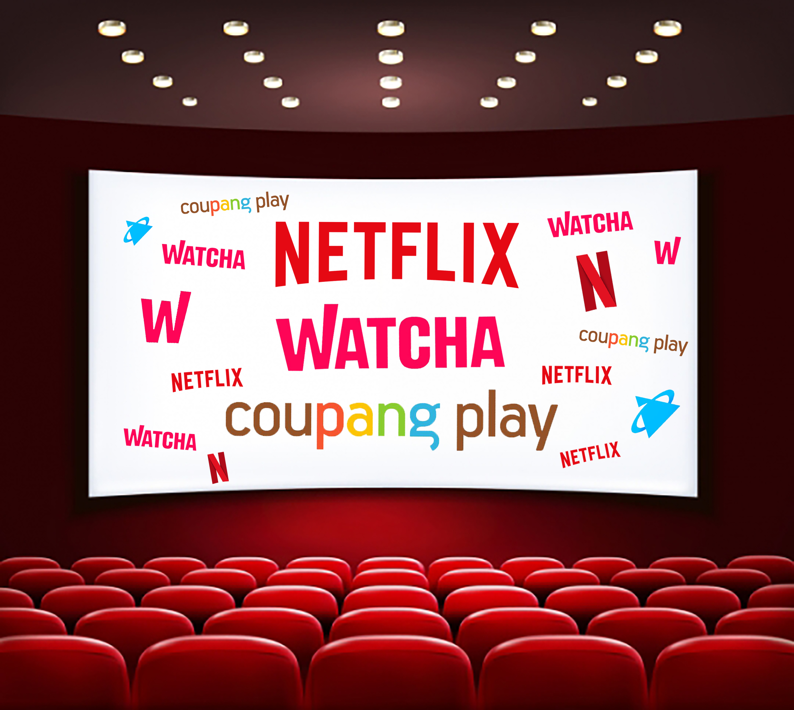
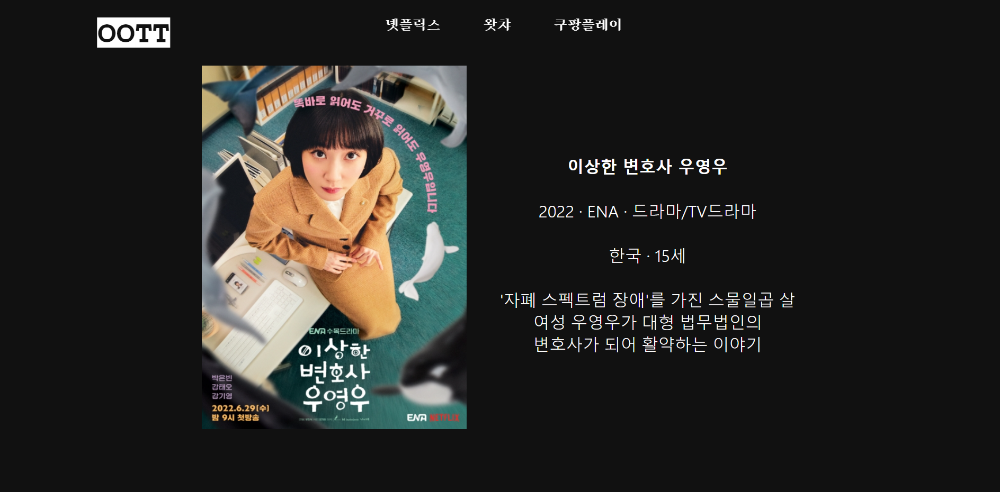

넷플릭스, 왓챠, 쿠팡플레이
여기저기 가입하지 마세요! OOTT에서 다양한 작품을 확인해보세요.

작품을 클릭해보세요.
작품별 세부 내용과 감상이 가능한 OTT 플랫폼을 확인할 수 있습니다.

이달의 추천작을 만나보세요.
매달 OOTT가 엄추천하는 이달의 추천작을 통해 당신의 인생작을 만나보세요.

OOTT로 만나는 당신의 OTT
OOTT를 통해 자신에게 맞는 OTT 플랫폼을 찾아보세요!

FAQ
OTT 플랫폼들은 가입자에 한해서 감상할 수 있는 컨텐츠 정보를 제공하고 있습니다. 때문에 OTT를 가입하지 않은 사람들은 정보를 수집하거나 가입을 해야만 어떤 작품이 있는지 확인할 수 있어 가입하기 전 혼란을 겪거나 가입 후 후회를 하기도 합니다. OOTT에서는 이러한 사용자들의 불편함을 줄이고자 만들어진 사이트입니다.
OOTT는 다양한 OTT 플랫폼 내 어떤 작품들을 감상할 수 있는지 한눈에 정리해 정보를 제공하는 사이트입니다. 현재는 넷플릭스, 왓챠, 쿠팡플레이에 한 해 정보를 제공하고 있으며 각 사이트 별 오리지널 컨텐츠, 독점작들을 한눈에 확인하실 수 있습니다.
OOTT는 다양한 OTT 플랫폼 내 어떤 작품들을 감상할 수 있는지 한눈에 정리해 정보를 제공하는 사이트입니다. 현재는 넷플릭스, 왓챠, 쿠팡플레이에 한 해 정보를 제공하고 있으며 각 사이트 별 오리지널 컨텐츠, 독점작들을 한눈에 확인하실 수 있습니다.
OTT란 ‘over the top’의 약자로 기존의 set‘top’box(셋탑박스)를 넘어서(over) 영상을 즐길 수 있다는 의미를 담고 있습니다.
OOTT는 over, over the top의 약자로, OTT가 가진 한계를 한 번 더 넘어(over) 사용자들의 편의성을 높이겠다는 목적을 담고 있습니다.
OOTT는 over, over the top의 약자로, OTT가 가진 한계를 한 번 더 넘어(over) 사용자들의 편의성을 높이겠다는 목적을 담고 있습니다.
OOTT는 로그인과 회원가입 없이 누구나 이용할 수 있습니다. 지금 뜨는 콘텐츠와 이달의 추천작에서는 작품을 클릭하시면 해당작의 정보 및 감상 가능한 OTT플랫폼을 소개해드립니다.
OOTT가 제공하는 서비스를 통해 오리지널 컨텐츠들과 독점작을 통해 자신에게 맞는 OTT 플랫폼을 찾아보세요
OOTT가 제공하는 서비스를 통해 오리지널 컨텐츠들과 독점작을 통해 자신에게 맞는 OTT 플랫폼을 찾아보세요
현재 OOTT에서는 넷플릭스, 왓챠, 쿠팡플레이 플랫폼의 정보만을 제공하고 있습니다.
다양한 작품들을 제공하고 있는 플랫폼들인 만큼, 현재는 지금의 OTT 사이트 정보를 충분히 제공하는 것을 최우선 목표로 두고 있습니다. 더 다양한 플랫폼과 다양한 정보를 비교할 수 있는 OOTT가 되기 위해 최선을 다하겠습니다.
다양한 작품들을 제공하고 있는 플랫폼들인 만큼, 현재는 지금의 OTT 사이트 정보를 충분히 제공하는 것을 최우선 목표로 두고 있습니다. 더 다양한 플랫폼과 다양한 정보를 비교할 수 있는 OOTT가 되기 위해 최선을 다하겠습니다.
정보 제공 목적과 사이트 이용 방법이 다르다는 점을 통해 OOTT만의 차별화 된 서비스 제공을 안내드립니다.
왓챠피디아는 작품 추천 및 평가 서비스 사이트로 사용자의 영화 별점 평가를 토대로 영화를 추천해주는 서비스입니다.
OOTT는 OTT 플랫폼 내 감상 가능한 작품만을 정보 제공하고 있으며 한눈에 어떤 OTT에서 어떤 작품을 감상할 수 있는지 파악할 수 있기에, 사용자가 OTT 가입 전 어떤 컨텐츠가 있는지 파악함으로써 자신에게 맞는 OTT 플랫폼을 선택할 수 있도록 돕는 서비스를 제공하고 있습니다. 또한 왓챠피디아와 달리 넷플릭스, 왓챠 뿐만 아니라 쿠팡플레이 플랫폼 정보 또한 제공하고 있습니다.
왓챠피디아는 작품 추천 및 평가 서비스 사이트로 사용자의 영화 별점 평가를 토대로 영화를 추천해주는 서비스입니다.
OOTT는 OTT 플랫폼 내 감상 가능한 작품만을 정보 제공하고 있으며 한눈에 어떤 OTT에서 어떤 작품을 감상할 수 있는지 파악할 수 있기에, 사용자가 OTT 가입 전 어떤 컨텐츠가 있는지 파악함으로써 자신에게 맞는 OTT 플랫폼을 선택할 수 있도록 돕는 서비스를 제공하고 있습니다. 또한 왓챠피디아와 달리 넷플릭스, 왓챠 뿐만 아니라 쿠팡플레이 플랫폼 정보 또한 제공하고 있습니다.